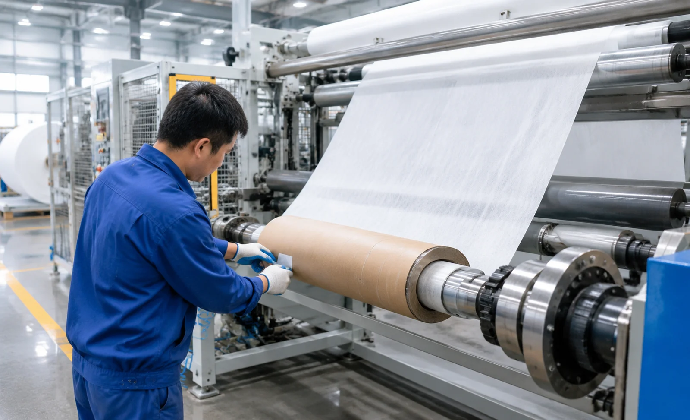
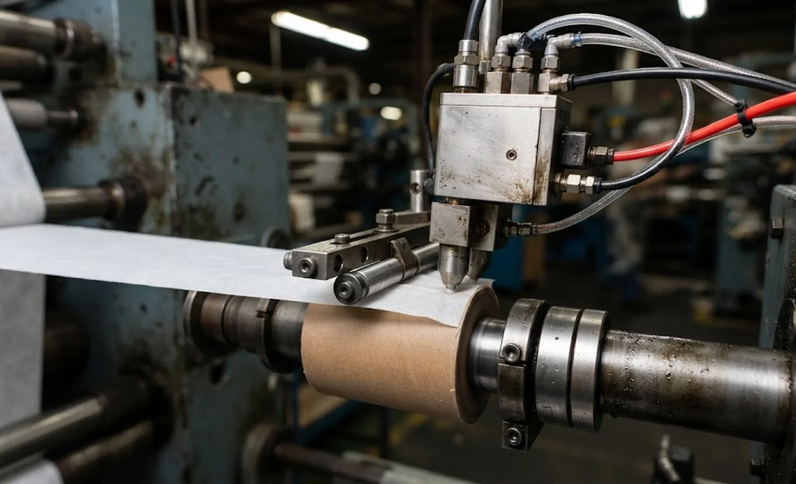

Published October 20, 2026 | By HDPTH Technical Editorial Team

Buyers compare slitter rewinders on width, speed and knife technology, and the core start rarely earns a line in the enquiry. Yet it is the only part of the roll built in a two-second window, and the part every downstream operator touches first. A loose first wrap telescopes on the unwinder; a glue miss means the web was never bonded; a misplaced tab turns into a jammed perforator. Start defects are cheap to prevent at specification stage and expensive to inspect for on every roll, forever. This guide covers the start methods, the applicator hardware, the dosing system and the test that proves repeatability.
Why the core start belongs in the specification
The first wrap does two jobs: it anchors the web to the core so tension can build without slip, and it forms the surface the next wrap bonds against. When the start is weak, every layer above inherits the defect — rolled edges, slack lanes and a tail that cannot be found without unwinding. For hygiene and medical nonwoven a failed start usually condemns the roll; for film and labelstock it surfaces as complaints about tails and loose ends. Because the start happens between machine cycles, it is the operation most often left to manual habits — which is precisely why it must be engineered, measured and written into the offer.
Core start methods: how the first wrap is secured
Four methods dominate. A glue dot applies hot melt or cold adhesive to the core under a controlled nip, the standard for porous, fibrous webs such as spunlace, tissue and airlaid. A transfer tab bonds a piece of double-sided tape or pre-coated patch between core and web, the answer for films, laminates and release-lined materials where liquid adhesive soaks or never wets. An overlap start tucks the leading edge under the first wraps, glue-free but dependent on web stiffness. An ultrasonic start welds synthetic webs where adhesives are unwelcome. The choice is a materials decision first and a machine decision second — and it is exactly where a generic quotation shows its limits.
| Start method | Best suited materials | Main specification risk |
|---|---|---|
| Glue dot (hot melt / cold glue) | Spunlace, tissue, airlaid, paper | Dosing drift, cooled nozzles, glue on outer wrap |
| Transfer tab | Films, laminates, release-lined stocks | Tab placement accuracy, magazine reloading downtime |
| Overlap / tuck start | Stiff papers, some nonwovens | Start failure on soft or slick webs |
| Ultrasonic start | Synthetics, adhesive-free hygiene stacks | Anvil wear, weld consistency across width |
Tab applicators: hardware worth interrogating
A tab applicator is a small pick-and-place machine living inside your production cycle, so interrogate it like one. Placement accuracy relative to the core index decides whether the tab lands under the web every time or only when the core happens to be good. Cycle time per start bounds your real changeover clock; magazine capacity sets how often an operator stops to reload, and reload time sets whether that stop is thirty seconds or five minutes. Ask for the actuation principle, the service access side, the tab size range, and whether tab material is restricted to one supplier or open to qualified equivalents. An applicator that cannot be reloaded without stopping the line will quietly move the bottleneck to the rewind station.
Glue dosing and the hot melt circuit
The glue system deserves the same scrutiny as the knives. Dot volume must be controlled, not guessed: shot time, application pressure and nozzle condition together decide whether the bond holds the first wrap or stains the tenth. Require independent temperature zones for tank, hose and nozzle, because a cooled nozzle is the most common cause of missed starts on morning shift. Filtration on the glue circuit, a heated hose rated for your adhesive’s viscosity window, and a purge routine in the maintenance plan separate a system that runs for years from one that chokes quarterly. Recipe storage matters too: a line running several materials changes start recipes as often as knife settings, and glue parameters should travel with the rest of the recipe, not in an operator’s notebook.
Repeatability at speed: the start sequence and its test
On a modern line the start is a choreographed sequence — core loaded, applicator fires, web presented, nip applied for a defined dwell, then acceleration. Each step has parameters, and parameters have tolerances. The buyer’s job is to make the sequence measurable. Ask how start pressure and dwell are set and stored, how the machine detects a failed start, and what the operator sees when one happens. Then convert it into an acceptance test: at FAT, run 20 to 30 consecutive starts on your material at production speed and count failures — web not bonded, tab misplaced, glue miss or smear. State the acceptance rate in the contract, for example no more than one failed start in 25, and add a peel check on the first wrap so bond strength is measured rather than admired.
What to write into the specification
- Start method selected per material with the engineering reason stated.
- Applicator placement accuracy, cycle time per start, magazine capacity and reload time.
- Glue system: dot volume window, independent temperature zones, filtration, heated hose rating.
- Start sequence integration with recipe management and failed-start detection.
- FAT protocol: consecutive starts at production speed with a stated failure-rate acceptance and first-wrap peel check.

A start is only as good as the core and shaft it lands on, so read this guide together with our core quality specification guide and our automatic web threading guide, and see how the start sequence integrates into our high-speed slitting machines.
Specifying a new machine or retrofit?
Send HDPTH your material range, roll sizes and start requirements. We will document the core start system — method, applicator, dosing parameters and acceptance test — in the offer itself.
Submit Your Project InquiryQuestions to put to every vendor
- Which start method is proposed for each of our materials, and why?
- What placement accuracy, cycle time and magazine capacity does the applicator achieve?
- What dot volume window, temperature zones and filtration protect the glue circuit?
- What consecutive-start failure rate will you commit to at FAT, and how is bond strength checked?
Frequently asked questions
What is the difference between a glue start and a tab start on a slitter rewinder?
A glue start fixes the first wrap to the core with a hot melt or cold glue dot applied under controlled pressure, which suits porous and fibrous webs such as spunlace and tissue. A tab start bonds the web to the core through a piece of double-sided tape or a pre-coated transfer tab, which works on films, laminates and release-lined materials where liquid adhesive soaks or fails. The right choice follows the material, not the supplier’s standard fitment.
How much space does an automatic tab applicator need on a slitter rewinder?
A tab applicator adds hardware beside the rewind station: an applicator head with its actuation stroke, a tape magazine that holds several hundred tabs, and access for reloading. On many machines this extends the frame or shifts the rewind station; on others it folds into the existing envelope. Ask each bidder for the applicator’s footprint, its service access side and the magazine capacity, then check those against your floor plan rather than against the catalogue drawing.
What dosing parameters should be adjustable on a glue core start system?
At minimum: dot volume or shot time, application pressure, dwell time, glue temperature with an independent control for hose and nozzle, and the position of the application point relative to the core. Recipe storage matters because a line running several materials changes start recipes as often as knife settings. Also require filtration on the glue circuit and a heated hose rated for your adhesive, since a cooled nozzle or a clogged filter is the most common cause of failed starts.
How is core start repeatability tested at factory acceptance?
Insist on a consecutive-start test at the FAT, not a demonstration. A typical protocol runs 20 to 30 starts on your material at production speed and counts failures: web not bonded, tab misplaced, glue miss or smear onto the outer wrap. Acceptance is stated as a failure rate, for example no more than one failed start in 25. Add a peel check on the first wrap so bond strength is measured, not assumed from how the demo looked.
Does an automatic core start system require special cores or tab materials?
Cores must be dimensionally consistent — diameter, roundness and wall strength — because the applicator is calibrated to a position, not to a quality. A weak or out-of-round core fails the start no matter how good the applicator is. Tabs are consumables: fix the tab material and adhesive in the contract with an approved-supplier list or a performance-equivalent clause, so a discontinued tape never becomes an excuse for start failures on your line.
Sources
- TAPPI: technical information papers on wound roll structure and roll quality
- ISO 11093 series: paper and board — testing of cores
- FEICA: European adhesive and sealant association, application and safety resources
- Adhesive and Sealant Council: hot melt adhesive application fundamentals
- ISO 13857: safety of machinery — safety distances to prevent reach into moving parts